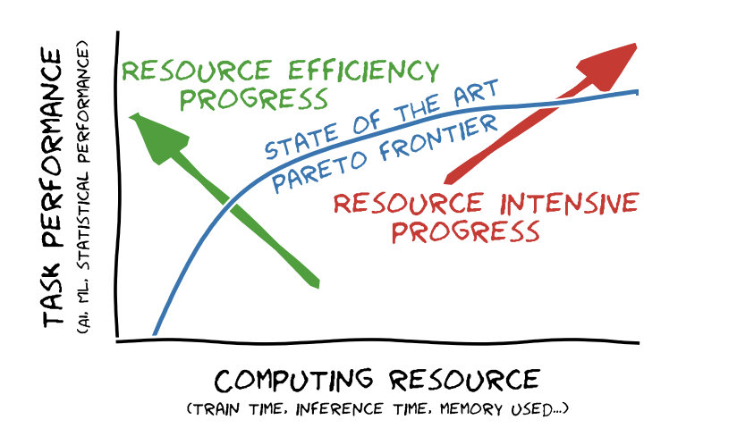
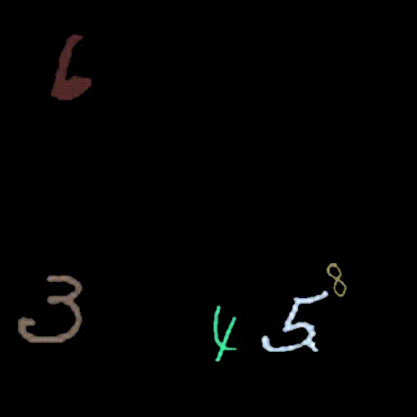
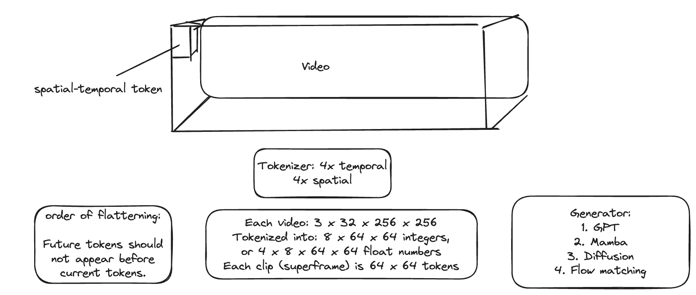

Introduction
In February 2024, OpenAI introduced SORA, a groundbreaking video generation model capable of creating high-resolution videos that look almost real. These videos exhibit 3D consistency and appear to follow physical laws, marking a significant leap in AI’s ability to understand and recreate visual information. Its significance feels like GPT-2 for language models. While commercial applications are still in their early stages, SORA demonstrates a path forward for human-level visual storytelling.
Inspired by this breakthrough, I conducted a hundred experiments on a smaller scale in April 2024. My goal was to explore whether it’s possible to train a minimal video generation model with limited resources. The field is advancing rapidly; while people await SORA’s official release, both open-source projects (OpenSora, OpenSoraPlan, CogVideoX) and commercial models (KLing, Luma, Runway, Synthesia) are gaining momentum. Low-cost training recipes are being shared, such as Andrei Karpathy’s $20 90-minute training run for GPT-2. There are numerous new techniques to try, but first, I’d like to summarize and share my learnings so far, hoping to inspire like-minded individuals to pursue similar paths.
Thanks to a small-scale setup, I was able to complete training runs within reasonable timeframes using a moderate GPU. Initial success was achieved in proving the concept on a “flying MNIST” toy world. With 250 A10-GPU hours (or $200 on Lambda Labs, approximately 1/3 of the price on AWS G5.8xlarge), I trained a video generation model capable of producing decent quality 256x256 resolution videos. The quality was good enough to fool myself if I glanced for 1 second. The model appeared to learn object permanence, distinct digits with consistent colors, and the simple physics governing their movements. More details can be found in this report on Weights & Biases.
Pareto frontier: Aiming for good and small

This graph from “Hype, Sustainability, and the Price of the Bigger-is-Better Paradigm in AI” illustrates a key challenge in AI development. SORA would be a frontier model at the resource-intensive end of the spectrum. We want to move in the direction of the green arrow, striving for lower training cost while maintaining high quality.
Access to vast computational resources, such as 10,000 A100 GPUs, is limited to a handful of organizations. Even if such resources were widely available, focusing solely on resource-intensive methods would be an inefficient use of our capabilities. The design space for training recipes is vast, and a strategic approach involves exploring this space through low-cost experiments before scaling up when confidence is high.
This raises an intriguing question: With a modest budget, is it possible to train a general-purpose video generation model comparable to SORA?
The need for controlling the domain complexity
The challenge of training general-purpose models with limited resources
SORA’s training costs likely run into tens of millions of dollars, driven by both data and model size. Larger datasets necessitate longer training times, while bigger models require both extended training periods and more high-end GPUs.
Is it feasible to train a high-quality model with a significantly smaller dataset? This seems impossible due to the inherent complexity of our world. Are one million video clips sufficient to capture our world’s complexity? 10 Million? 100 Million? Probably more than that. While sample-efficient algorithms can help reduce the required data size, the order of magnitude for necessary data likely remains substantial.
Similarly, training a high-quality model with a much smaller architecture presents its own challenges. Unless a dramatically more efficient architecture than Transformers emerges, a small model would struggle to capture the complexity present in such vast datasets.
Therefore, to make progress with limited resources, we must find ways to reduce the data size.
Exploring niche domains: A path to low-budget training
Niche domains can be significantly simpler than our physical world, potentially allowing a few tens of thousands of observations to sufficiently represent the domain. With a drastic reduction in data size, smaller models and lower training costs become feasible.
We can conceptualize a series of domains, progressing from simple to complex:
- 2D Flying MNIST (a 2D world with colorful handwritten digits moving at constant speed, bouncing off boundaries)
- 2D arcade games (Pong, Breakout, etc.)
- Anime and cartoons
- Limited locations: video walkthroughs of 3D house models, fly-through views of objects (e.g., NERF models)
- Limited objects: close-up videos of specific subjects (e.g., dogs, selfie videos)
- Limited scenery: footage of hiking trails, beaches, etc.
- Public video datasets: UCF-101, Panda-70M, InterVid, etc.
- The real world, and our collective video reservoir.
A strategic approach involves starting from the simplest domain and gradually progressing towards more complex ones. Effective training recipes discovered in simpler domains are expected to scale to more complex scenarios with straightforward increases in data and model size.
Interestingly, this mirrors how humans learn: start from simple lessons and gradually build up to more complex concepts.
Pre-train or fine-tune?
Fine-tuning is an effective strategy to reduce training costs, but it comes with certain limitations:
- Fixed architecture: The model’s architecture is predetermined, which can be a significant constraint as we may still be far from an optimal design for video generation tasks.
- VAE dependency: Pre-trained weights often rely on a specific Variational Autoencoder (VAE), limiting the design space and opportunities to further reduce training costs.
Despite these limitations, fine-tuning has shown promising results. For example, the team at Lambda Labs open-sourced an intriguing Text2Bricks experiment, fine-tuning OpenSora weights on Lego videos. This project required approximately 1000 A100 GPU hours and 10,000 videos. We can anticipate further reductions in cost as more advanced pre-trained models become available and more sample-efficient fine-tuning algorithms are developed.
For my experiments, I try to find the simplest domain that has non-trivial complexity: a toy 2D world with flying digits. The scale of this toy world is small enough that pre-training from scratch is not prohibitively expensive, allowing for more freedom in exploring different model architectures and training strategies.
Let’s see some details.
Flying MNIST Simulator
A Python script is used to simulate a toy 2D world where colorful handwritten digits fly and bounce around. An example is shown below.

For training, I used up to 100k clips, each with 32 frames, covering roughly 6 seconds at 5 fps. This amounts to 160 hours of video. Is this a lot? Let’s compare with human learning. If a baby is awake and actively observing 5 hours per day, it would be roughly a month of learning. It would be interesting to see if the AI can learn:
- Object identity: a digit is a digit, and not a random blob
- Object permanence: a digit does not suddenly disappear
- Distinct digits: whether the model can learn to distinguish between different digits
- Consistent colors: color of a digit remains consistent
- Physics: digits follow simple physics - constant speed and bounce off walls
VAE: The Compressor
The first model to train is a compressor. Unlike language, images and videos have very high dimensionality: a tiny 2-second 256x256 video contains over 100 million numbers. Compression is necessary for the model to work.
The compressor of choice is a VAE (Variational Auto-Encoder) with an encoder and decoder. The encoder converts a video clip into a latent space, and the decoder converts the latent space back to a video clip. The latent space is a compact representation of the original data and is easier to model.
Optionally, you can quantize the latent space using vector quantization, which gives you a VQ-VAE. Quantization gives rise to a vocabulary of visual words or tokens. This enables the use of language model training recipes on 1-dimensional (flattened) sequences of token IDs. While I was initially skeptical, the results were surprisingly good.
Training a small VAE is relatively quick. I trained a spatial-temporal VQ-VAE with 4x temporal compression and 4x4 spatial compression, using a vocabulary size of 5120. The training run documented in Weights & Biases achieved a good balance of reconstruction quality and compression rate. It took about 2 A10 GPU hours to converge.
With this VAE model, you can transform a 32-frame video clip (32 x 3 x 256 x 256) into latent “tokens”. Without quantization, the compressed representation of the video has a shape of 8 x 4 x 64 x 64 (each “token” is a 4-dimensional floating point vector, and there are 8 x 64 x 64 = 32,768 tokens). With quantization, the compressed representation is simply 8 x 64 x 64 = 32,768 integers (token IDs). The range of the token IDs is from 0 to 5,023.

With this compact tokenized representation, we are ready to train a generator.
Generator in the Latent Space
There are two approaches to generate video in the latent space: the autoregressive next-token predictor (language model) and the diffusion model.
Autoregressive Next-Token Predictor
Each 32-frame video clip is represented as a sequence of 32,768 tokens. The video clips are then concatenated to form a long sequence, separated by a special start-of-video token. This long sequence is fed into a language model training recipe.
I used nanoGPT to train a 60MB model with the GPT-2 architecture. The model is trained to predict the next token ID in the latent space, instead of the next English token. It worked surprisingly well and began to learn the spatial-temporal patterns quickly.
The main ingredient for video quality is ensuring a sufficiently large context window. I used 6,000 tokens, which is much larger than the typical GPT-2 setting. However, this is still a small window size for video. Each video frame is 4,096 tokens, so this context window allows the model to look back only slightly more than one frame, making temporal consistency challenging to enforce.
Secondly, the training sample size is crucial. Using 100k clips produces better results than 10k clips, and much better than 1k clips. The question remains whether we should use even more data. I hope not, as if such a simple 2D world requires much more than 100k training examples, it would be concerning for more complex domains.
This training run showcases one of the better results using nanoGPT.
The generated videos start out as random compositions of visual tokens:
After 6 hours of training, line strokes started to appear:
24 hours in, the digits began to emerge, but temporal consistency was poor:
After 10 days, consistency and physics were much improved:
For comparison, here’s a training run using a 1,024 token context window.
With a smaller context window, the training time is much shorter (1 day to converge), but temporal consistency is poor, and digits would suddenly appear throughout the clip:
Diffusion Model
For the diffusion model, I used ST-DIT from OpenSora and Stable Diffusion’s SD VAE.
In this approach, the context window encompasses the entire video clip, so I expected more temporal consistency than the autoregressive counterpart. Training sample size still plays a significant role. Using a 24GB A10 GPU, I needed to use a small version of the diffusion transformer model.
A representative training run can be found here.
The generated videos also start out as random compositions of visual tokens (resembling crops of natural images this time):
After one day of training, localized dream-like flowing patterns emerged, though they didn’t yet resemble digits:
On day 3, the moving patterns began to look like digits, but they were so fluid that they seemed to lack “bones”-like structure:
By day 10, the digits were much more stable and distinct, and the moving patterns were steady and smooth:
What’s Next
250 A10 hours (or approximately 80 A100 hours, costing around $200) proved sufficient to adequately solve the video generation task for the 2D toy world of Flying MNIST Digits.
Context window size and data sample size are important factors for quality, but also drive up cost. There are numerous new techniques that are worth exploring to improve quality while reducing cost. Here’s a non-exhaustive list:
- Flow matching: This technique could enhance the temporal consistency of generated videos.
- Better quantized VAE for auto-regressive video generation: Improving the VAE could lead to more efficient and higher-quality latent representations.
- Token masking: This could reduce the \(N\) in the \(O(N^2)\) complexity of attention layers, potentially speeding up training and inference.
- Coarse-to-fine generation: Generating whole video frames at the coarse level first, then progressively refining to small details. This can dramatically reduce the context window size and compute cost.
- Better positional encoding for long context windows in the temporal-spatial setting.
- Hyper-optimized LLM training with long context (e.g.,
llm.c). - Combining strengths of autoregressive and diffusion models could yield interesting results.
- Curriculum learning: Starting with simpler tasks and progressively increasing difficulty could improve learning efficiency.
These avenues for improvement suggest that there’s still significant potential to enhance the quality and efficiency of video generation models, even in this simplified domain. As we continue to refine these techniques, we’ll be better positioned to tackle more complex video generation tasks in the future.
More to come.